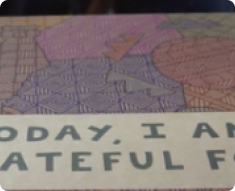

“Time is the coin of your life. It is the only coin you have, and only you can determine how it will be spent.”
“Be grateful for your gift of time and spend it wisely!”
Our Recommendations for You
-
1. Watch this six-minute video.
What resonates the most for you? What do you think about your gift of time?
-
2. Develop a daily gratitude practice
- Start a gratitude journal and write down three things you are grateful for each day.
- Practice expressing gratitude by sending thank your notes or simply telling people how much you appreciate them.
- Reflect on the positive aspects of your life and acknowledge the good that does exist.
Helpful links
Watch
New book features tens of thousands of journal entries expressing gratitudeSource: Greater Good Science Center
 -
3. Incorporate all five of these activities into your daily and weekly routines.
Simply put: if you spend time on each of these five areas, you will likely see the results. If you don’t, you won't. Responsibilities like work and caregiving may present time challenges, but spending more time on these activities, especially the ones that you don’t do now, can make a difference in your quality of life.
-
Improving your health
“Take care of your body. It's the only place you have to live” - Jim Rohn
Put in the time to be as healthy as possible. Our recommendation: Spend at least one hour every day focused on physical activity, nutrition and your other health priorities.
-
Strengthening relationships and community connections
“Nurture the relationships you have, rekindle the relationship you’ve lost, create the relationships you wish you had” – Dr. George Everly
Our recommendation: Devote at least one hour each day cultivating relationships with friends and family and engaging with people who share your interests.
-
Helping others
“The best way to find yourself is to lose yourself in the service of others.” – Mahatma Gandhi
“We can’t help everyone, but everyone can help someone.” – Ronald Reagan
Your responsibility for helping others didn’t expire at 65 or any other age. Be alert to opportunities to help family members, friends, or neighbors in need. Also consider volunteering at a helping program in your community. Contributing to the wellbeing of others is key to a fulfilling life and fosters a sense of purpose and community, and you will find that you gain as much from the experience as the people you help. Our recommendation: Spend at least four hours per week helping others.
-
Keeping Mentally Active
Exercise your mind the same as you would exercise your body. Practice healthy mental habits that will help you, empower you, and improve your perspectives. Practice them daily.” ― Akiroq Brost
Use it or lose it. Find activities that challenge you and require using different parts of your brain, such as reading aloud, playing a musical instrument, learning something new, playing games with others, or engaging in group conversations. Our recommendation: Devote at least one hour per day exercising your brain.
-
Having more fun:
“We don’t stop playing because we grow old; we grow old because we stop playing.” — George Bernard Shaw
Cultivate the art and daily practice of having more fun. Read our guidance about Having More Fun. Our recommendation; Spend at least one hour each day doing things that are enjoyable and make you feel better.
-